Candidati
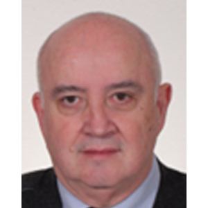
COSTANTINO BERTANI
Settore Civile/Ambientale
Ingegnere civile, titolare da 40 anni dello Studio Bertani, occupandosi di progettazione architettonica, direzione dei lavori e sicurezza nei cantieri.
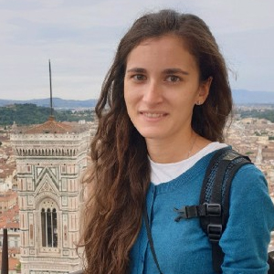
ALESSANDRA CASTAGNA
Settore Industriale
Laureata in Ingegneria Biomedica al Politecnico di Milano, dal 2018 ha sviluppato il proprio percorso professionale tra ricerca preclinica ospedaliera e ricerca applicata in contesto industriale per una multinazionale farmaceutica. Socia AIIC - Associazione Italiana Ingegneri Clinici e membro delle commissioni Biomedica, Ingegneri d'Impresa e Dipendenti e Pari Opportunità.
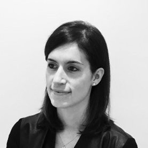
SILVIA CREMASCO
Settore Civile/Ambientale
Ingegnere edile, ha lavorato come direttore d’area presso Contec Ingegneria e ha collaborato con Alperia e Adacta, attualmente ricopre il ruolo di responsabile efficientamento energetico B2B e B2C presso MAGIS Smart Srl. Ha conseguito un master di II livello di Energy Management presso il Politecnico di Milano.
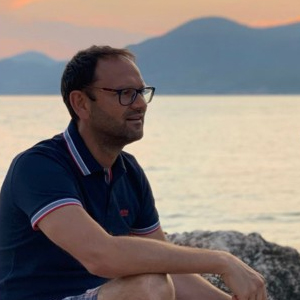
LUCIO FACCINCANI
Settore Civile/Ambientale
Ingegnere civile titolare di uno studio associato per la progettazione edile e strutturale da più di 20 anni. Segretario dell’Ordine nel mandato 2022-2026.
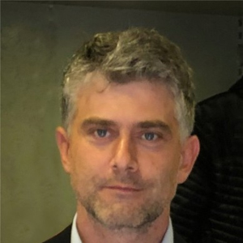
ANDREA FALSIROLLO
Settore Industriale
Ingegnere Industriale, Imprenditore e libero professionista in ambito energetico ed impiantistico, fondatore della commissione rapporti con gli enti pubblici e della commissione energie rinnovabili, Vice Presidente di FOIV - Federazione Ordini Ingegneri Veneto nei mandati 2014-2018 e 2022-2026, Consigliere dell’Ordine ed ex Presidente dell’Ordine nel mandato 2018-2022. Da maggio 2023 ricopre la carica di Presidente dell’Accademia Statale di Belle Arti di Verona.
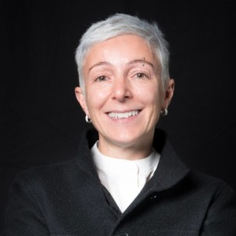
ELENA GUERRESCHI
Settore Civile/Ambientale
Ingegnere edile laureata a Bologna, Master in Project Management all’ Università di Verona, laurea in arti visive alla Nuova Accademia di Belle Arti di Milano, libero professionista, è stata nel CdA di aziende del settore dei servizi e dell’immobiliare. Ha ricoperto il ruolo di consigliere di amministrazione di SGL Multiservizi di San Giovanni Lupatoto, e general manager per un’azienda metalmeccanica. Coordinatore del Comitato di Redazione del Notiziario dell’Ordine e membro della commissione pari opportunità.
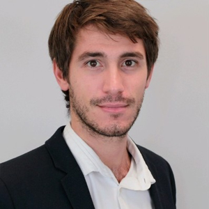
FRANCESCO ISALBERTI
Settore Civile/Ambientale
Ingegnere edile-architettura, ha conseguito un Master di II livello in analisi strutturale e conservazione di monumenti storici tra Barcellona (Spagna) e Padova. Lavora come Project Manager in RFI operando su commesse e appalti pubblici sull’infrastruttura ferroviaria sul nord Italia. Ha lavorato in imprese nel settore dell’impiantistica antincendio e in multinazionale in ambito bonifiche ambientali e supporto alle costruzioni civili/edili. Coordinatore della commissione Supporto alla Protezione Civile.
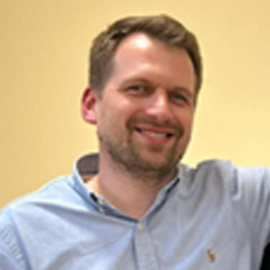
CLAUDIO LAVARINI
Settore Civile/Ambientale
Ingegnere civile strutturista, opera nei settori civile e industriale come titolare e direttore tecnico di una società di ingegneria. Si occupa inoltre di sicurezza nei cantieri CSP/CSE e di prevenzione incendi. È abilitato come BIM Specialist, certificato sui Criteri Ambientali Minimi (CAM) come progettista per Bureau Veritas e accreditato come tecnico CasaClima. È iscritto al n. 500 dell’Elenco Regionale dei Collaudatori della Regione Veneto.
ELENA MAZZOLA
Settore Civile/Ambientale
Ingegnere edile, ha lavorato come docente universitaria nelle Università di Venezia e Padova. Attualmente esercita la libera professione ed è ricercatrice presso l’Università IUAV di Venezia nell’ambito dell’efficientamento energetico a scala urbana. Dottore di ricerca in Architettura Città e Design, Esperto in Gestione dell'Energia (EGE), Esperto in edifici di qualità (CQ) e autrice di diverse pubblicazioni scientifiche nazionali ed internazionali. Coordinatore della commissione impianti termotecnici dell’Ordine e membro del GDL BIM di FOIV.
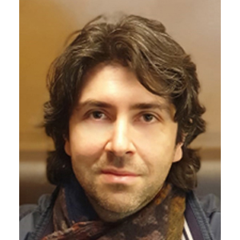
STEFANO ORGANO
Settore Civile/Ambientale
Ingegnere civile, ha lavorato per Società di Ingegneria. Attualmente è titolare dello Studio 220 Architettura & Ingegneria a Villafranca, specializzato in progettazione strutturale opera su commesse nazionali ed estere. Membro della commissione strutture dell’Ordine.
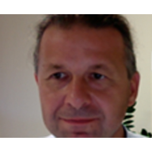
CLAUDIO TOMAZZOLI
Settore dell'Informazione
Ingegnere Informatico, Dottore di ricerca in Informatica. Dopo 15 anni di attività in azienda ha intrapreso l’attività di docente universitario. Svolge l’attività di libero professionista in ambito digitale forense. Fondatore della commissione ingegneri dell’informazione dell’Ordine e del comitato Nazionale Ingegneri dell’Informazione di cui è membro dalla loro fondazione.
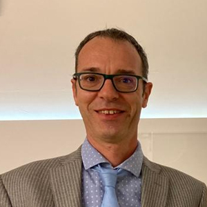
EMANUELE VENDRAMIN
Settore Industriale
Ingegnere Industriale, libero professionista in ambito energetico, collabora come consulente con ARERA, GSE SPA – Gestore Servizi Energetici, associazioni di Confindustria e scrive per la rivista del GME – Gestore Mercati EnergeticI. Ha fatto parte del Consiglio di Disciplina, ha coordinato la commissione energie rinnovabili ed è stato membro del GDL Energia e Impianti del CNI. Attualmente fa parte del comitato di redazione del Notiziario. Tesoriere dell’Ordine nel mandato 2022-2026.
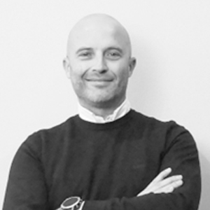
MAURO VINCO
Settore Industriale
Ingegnere industriale, titolare di una società tra professionisti specializzata in impianti tecnologici a San Martino Buon Albergo. Esperto in prevenzione incendi ed EGE certificato. Membro della Commissione Provinciale Vigilanza Pubblico Spettacolo. Consigliere dell’Ordine di Verona nel mandato 2018-2022 e membro della Commissione Impianti Elettrici.
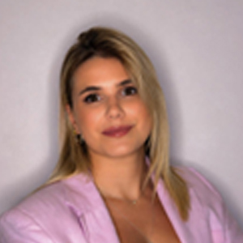
IRENE ZANANDREIS
Settore Civile/Ambientale
Ingegnere civile, 28 anni, libero professionista, collabora da 5 anni con un studio di architettura e urbanistica. Assessore alla sostenibilità presso il Comune di Costermano dal 2024.
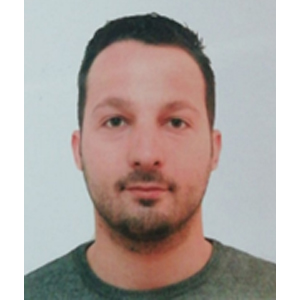
ALBERTO VICENTINI
Settore Civile/Ambientale
Ingegnere civile iunior, libero professionista con ufficio a Montecchia di Crosara opera nella progettazione, nella direzione lavori e nella sicurezza cantieri. Esperto in Edifici di Qualità (CQ). Coordinatore della commissione Giovani.